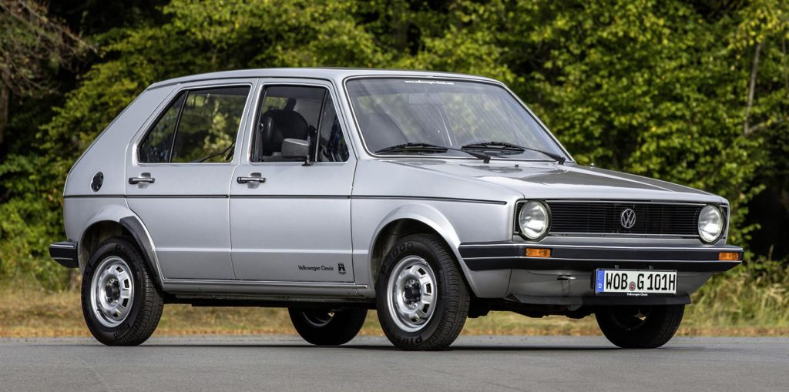

Вкладки
Краткая история Volkswagen
История Volkswagen долгая и насыщенная. Итак, начнем с основ. Когда и где был основан Volkswagen?
Компания была основана в 1937 году в Вольфсбурге, Германия, с простой идеей: создать семейный автомобиль, на который мог бы накопить даже обычный рабочий человек. Отсюда и его название — Volkswagen означает «народный автомобиль».
Именно Фердинанд Порше спроектировал знаменитый Volkswagen Type 1, тогда известный как Käfer, а сегодня известный как Beetle.
До начала войны на заводе успели выпустить только две модели V38 и V39s. Эти модели могли стать очень популярными, но приоритет был отдан военным заказам. На заводе стали выпускать разные виды военной техники. В 1946 году союзники разрушили немецкий завод практически до основания. И после войны началось его восстановление под контролем Англии, в зону которой попал город Вольфсбург. В 1947 году автомобиль Volkswagen был выставлен в Ганновере и вызвал живейший интерес, заказчики из разных стран высоко оценили возможности машины. Завод получил первые заказы, автомобили стали продаваться на экспорт в Швецию, Швейцарию, Бельгию.
После войны, с помощью британцев, Volkswagen вскоре стал символом немецкого послевоенного экономического чуда, и к 1955 году по всему миру был продан миллион Beetle. Компания обнаружила потребность в более крупном автомобиле, и родилась еще одна икона — автобус Volkswagen Type II.
 Tupe 1, Bentley
Tupe 1, Bentley
 Tupe 2
Tupe 2
Автобус Volkswagen определил 60-е годы и даже сегодня является символом свободы той эпохи.
К концу десятилетия Volkswagen представил новое поколение автомобилей Passat и Golf .
Своим успехом они отчасти обязаны отказу от задней компоновки двигателя в пользу переднемоторной.
Вскоре Golf обогнал Beetle и стал самым продаваемым автомобилем Volkswagen , и до сих пор остается самой широко покупаемой моделью VW всех времен.

После двух десятилетий доминирования Golf компания снова осознала ностальгический потенциал Beetle. Однако с приближением тысячелетия эту классику необходимо было модернизировать.
Новый Beetle был запущен в производство в 1997 году, более изящный и экономичный, но со знакомой фигурной формой.
Volkswagen был на вершине мира, даже ненадолго превзойдя Toyota как самого продаваемого в мире производителя автомобилей.
После того, как провал с тестами на выбросы поставил под угрозу их репутацию, Volkswagen оправился, пообещав разработать качественный электромобиль и представить семейство автомобилей ID в 2020 году.
2010-е годы также ознаменовали конец эпохи, поскольку производство Beetle было окончательно прекращено в 2019 году.
Все бренды компании
Группа Volkswagen состоит из 13 брендов, разделенных на группы брендов: Core, Progressive и Sport Luxury.
- Volkswagen (легковые автомобили) — в настоящее время часть концерна, занимающаяся производством легковых автомобилей, не оформлена как дочернее акционерное общество, а напрямую подчиняется руководству Volkswagen AG.
- Audi — последняя автомобильная марка группы Auto Union, приобретённой у Daimler-Benz в 1964 году.
- Lamborghini — компания была приобретена дочерней компанией Audi.
- Ducati Motor Holding S.p.A. — один из ведущих производителей мотоциклов премиум-класса, приобретён Audi AG (подразделением концерна Volkswagen AG) в апреле 2012 года у компании Investindustrial SpA за 1,1 млрд $.
- Italdesign Giugiaro — 90,1 % акций было выкуплено в 2010 году итальянской Lamborghini Holding, чьей материнской компанией является Audi AG, в свою очередь, входящая в состав концерна Volkswagen AG. Таким образом, собственником ателье фактически стал Volkswagen. Оставшаяся доля акций принадлежит семье одного из основателей Italdesign Джорджетто Джуджаро.
- Bentley — компания была приобретена в 1998 году у британского концерна Vickers plc[англ.] вместе с Rolls-Royce, но не может самостоятельно производить автомобили под этой маркой, так как сама марка была продана компании BMW.
- Porsche AG — 75 % акций принадлежит Volkswagen AG, остальные с сентября 2022 года котируются на Франкфуртской фондовой бирже[17]. До сентября 2015 года Мартин Винтеркорн являлся одновременно председателем правления Porsche SE и Volkswagen AG.
- Bugatti Rimac — совместное предприятие между Porsche AG (45 %) и Rimac Group (55 %).
- Seat — контрольный пакет акций компании (53 %) был приобретён у государства в 1986 году. С 1990 года марка практически является собственностью концерна Volkswagen AG, владеющего 99,99 % акций компании.
- Škoda — компания была приобретена в 1991 году.
- Scania AB — контрольный пакет акций компании (70,94 %) был приобретён в 2009 году. Производит седельные тягачи, грузовики и самосвалы, автобусы и дизельные двигатели.
- MAN AG — контрольный пакет акций компании (55,9 %) был приобретён в 2011 году. Производитель седельных тягачей, грузовиков и самосвалов, автобусов, дизельных и гибридных двигателей.
- Navistar — американский производитель тягачей.